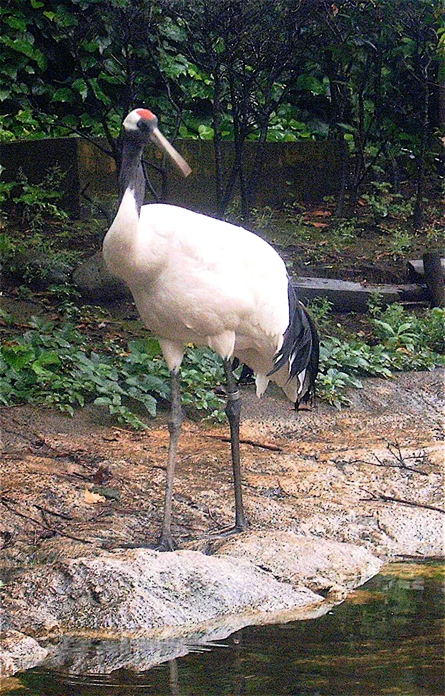
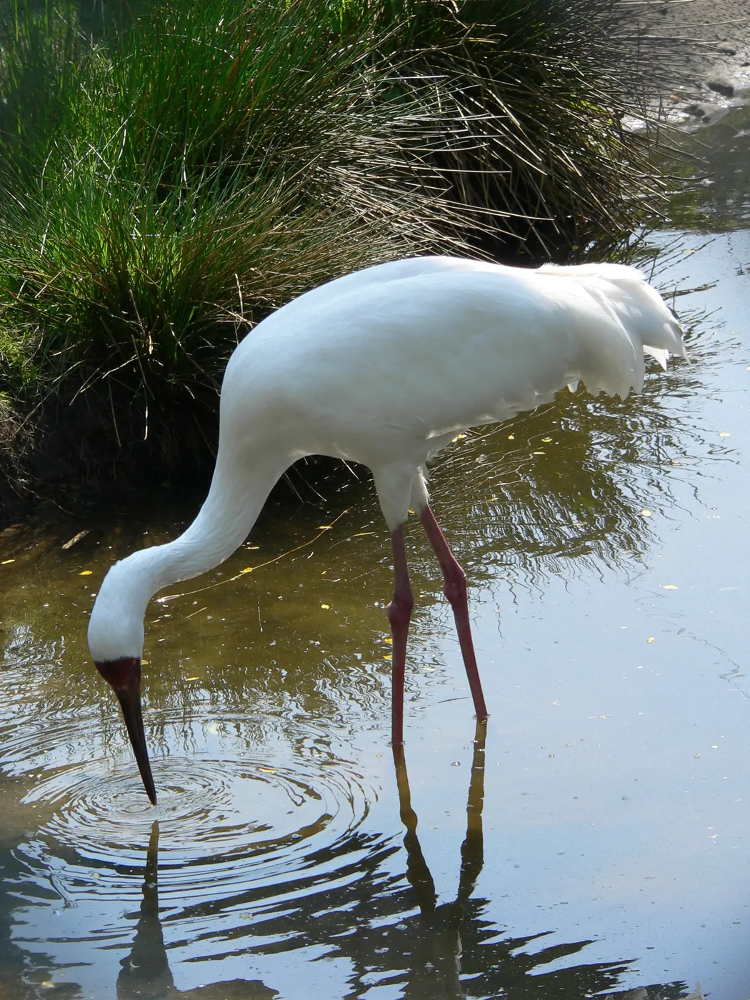

射阳 & 盐城生活指南
本地人整理的办事、出行、周边游干货
一句话定位：给在射阳生活、或要到射阳 / 盐城办事、探亲、旅行的人看的一份实用清单——交通怎么走、事去哪儿办、周末去哪儿玩、本地有啥讲究，尽量一次说清。
🚌 交通出行
射阳县城到盐城市区约 50–60 公里（以实时导航为准）。射阳本地没有民用机场和高铁站，坐飞机、坐高铁都要先到盐城。以下为常见思路，具体班次请以官方实时查询为准。
盐城南洋国际机场位于盐城市区东侧。常规有两种走法：
- 射阳 → 盐城市区 → 机场：县城汽车客运站坐班车到盐城汽车站，再换乘机场大巴或出租车前往；
- 射阳 → 盐城高铁站 → 机场：先到盐城站，再打车或换乘机场大巴，两地相距十几公里。
机场航线与班次相对有限，返程末班较早，务必提前查好当天时刻与是否停运。
射阳没有高铁站，坐高铁要先到盐城。盐城有 盐城站、盐城北站 等不同车站，买票、打车前一定要看清票面写的是哪个站。
- 常规：县城客运站坐班车到盐城汽车站，再换公交 / 打车到对应车站；
- 省事：直接网约车或自驾，约 1 小时（视路况）。
- 县城公交覆盖主要街道、医院、学校与政务区域，票价便宜，可用手机地图查看实时到站；
- 去乡镇多靠城乡班车，班次较稀、末班偏早，出行前先确认返程时间；
- 县城打车 / 网约车较方便，夜间与偏远乡镇可能不太好叫车。
- 上海：从盐城坐高铁 / 大巴，或自驾走沈海高速等干线；
- 南京：盐城乘高铁约 2 小时上下；
- 连云港 / 南通 / 淮安：就近走高速或普速、高铁。
以上均为公开常识性整理，以实际运营为准。
| 目的地 | 常规方式 | 提醒 |
|---|---|---|
| 盐城南洋机场 | 班车 / 自驾到盐城，再换机场大巴或打车 | 班次少，先查当天时刻 |
| 盐城站 / 盐城北站 | 班车到盐城后换乘；或直接网约车 / 自驾 | 看清票面车站名 |
| 上海 | 盐城乘高铁 / 大巴；或自驾 | 节假日票紧，尽早订 |
| 南京 | 盐城乘高铁 | 约 2 小时上下 |
以上时间与方式为公开常识整理，实际以实时导航与运营方公告为准。
🏛️ 办事指南
医保、社保、政务大厅这类事，共性只有三条：先线上确认政策与材料 → 网上预约 → 带齐身份证件。具体窗口、所需材料随政策变化，请以官方渠道最新公告为准。
- 异地就医一般要先线上备案（国家医保服务平台 App、江苏医保或盐城医保官方公众号），备案后持医保卡 / 电子凭证就医可直接结算；
- 未备案往往需要先自费垫付，再回参保地按规定报销，流程更长；
- 门诊慢特病、转诊等有额外要求，办前先在线或电话确认。
- 缴费记录、参保证明：优先用「江苏智慧人社」App、电子社保卡、国家社会保险公共服务平台在线查询或打印；
- 跨省 / 跨市转移：通常线上申请即可，留意两地经办机构的审核进度；
- 灵活就业参保、补缴等政策各地差异大，先确认本地口径。
- 多数事项已支持线上预约取号，先预约再到场，能省不少排队时间；
- 带好本人身份证及相关证件原件，必要时备好复印件；
- 「一件事一次办」类事项可在同一大厅联办，减少来回跑动；
- 不确定要带什么材料，先拨打 12345 问清楚再跑。
- ① 先查：官方公众号 / 政务 App / 12345 确认政策与材料；
- ② 预约：能线上预约就先约，避开高峰时段；
- ③ 带齐：身份证 + 相关原件复印件，一次性带够；
- ④ 留痕：收好回执与受理单，记下办结时限和查询方式。
🦩 周边游
射阳与盐城的看点，核心是黄海湿地这条世界自然遗产带：滩涂、候鸟、渔港。秋冬是观鸟季，出发前先看潮汐与天气。

位于盐城沿海滩涂，是「中国黄（渤）海候鸟栖息地」世界自然遗产的组成部分。丹顶鹤是这里的标志性物种，每年秋冬有大批候鸟来此越冬。
- 最佳季节：11 月至次年 2 月前后；
- 观鸟请勿投喂、勿喧哗、勿靠近惊扰，垃圾随身带走；
- 保护区有开放范围与时段，出发前请查官方公告。
条子泥一带是黄海湿地重要的候鸟停歇地，退潮后滩涂辽阔，勺嘴鹬等极危候鸟会在此中转补给，是观鸟与拍鸟的热门去处。
- 下滩前先查潮汐表，涨潮迅速，切勿深入；
- 滩涂松软，穿防滑鞋，不要单独行动；
- 核心区可能限制进入，以现场指引与官方公告为准。

除丹顶鹤外，盐城湿地也是白鹤、勺嘴鹬、黑嘴鸥等多种珍稀鸟类的栖息与中转地，观鸟讲究「远观不打扰」。
- 带望远镜或长焦镜头，保持安全距离；
- 穿与环境相近的素色衣物，避免鲜艳颜色；
- 清晨与傍晚鸟类活动最活跃。
射阳临海，黄沙港是本地知名的渔港与海边去处：看渔船、吹海风、吃海鲜，退潮后的滩涂与潮沟也是很多人爱去的地方。
- 渔港作业区、码头有安全管制，请按现场指示活动；
- 赶海务必看潮汐，涨潮前提前撤离；
- 海鲜即时价波动大，购买前先问清价格。
县城内还有公园与广场等日常休闲去处，适合傍晚散步。
以上景点信息为公开常识整理，开放范围、门票与时段请以官方最新公告为准。
🌾 生活贴士
射阳地处江苏沿海，气候带有明显的季风海洋性特征：四季分明、雨热同季，春秋较短，夏季湿热多雨，冬季湿冷；沿海多大风，夏秋易受台风外围影响。
- 看农时与田间气象：本站「农田气象」板块；
- 台风季盯紧预警：本站「台风监测」；
- 日常天气：射阳天气。
射阳话属江淮官话一带，与普通话的主要差异在声调、语速和部分日常称呼上，多数用词能听懂。
- 年轻人基本都能说普通话，交流没有障碍；
- 乡镇上年纪的人多用方言，讲慢一些、重复一遍通常都能沟通；
- 办事、就医时直接用普通话说明来意即可。
- 射阳大米：射阳是江苏重要的稻米产区，射阳大米为国家地理标志产品，米粒饱满、口感软糯；
- 洋马菊花：射阳洋马镇以菊花种植闻名，既是观赏花卉，也是常用中药材，秋季菊花盛开时景色很好；
- 沿海还有海产品与水产养殖等特色，时令与价格以当地市场为准。
- 台风季关注预警，沿海大风天尽量少去滩涂与码头；
- 夏秋蚊虫多，去湿地、田间记得防蚊防晒；
- 赶海、观鸟先查潮汐与天气，安全永远第一；
- 办事、维权、咨询政策，先拨打 12345。